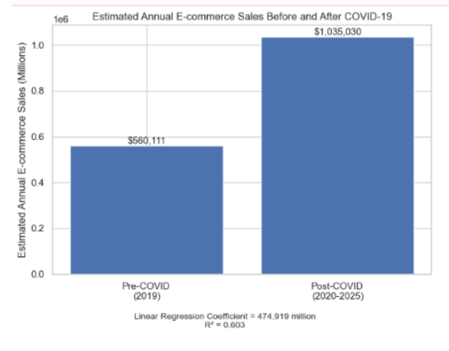

This project investigated the lasting impacts of the 2020 COVID-19 pandemic on online retail demand.
Did the dramatic increase in e-commerce during COVID-19 create a permanent change in consumer behavior?
Our hypothesis was that once consumers became accustomed to online shopping, e-commerce would remain above pre-pandemic levels.
Public datasets were cleaned and merged using Python and Pandas. Exploratory data analysis, data visualization, and linear regression were used to examine changes in e-commerce sales before and after COVID-19.

Figure 3. Estimated Annual E-Commerce Sales Before and After. Data compiled from the U.S. Census Bureau, Annual Retail Trade Survey (ARTS), E-Commerce Sales by Kind of Business (NAICS 4541).
The analysis showed that e-commerce sales increased significantly during COVID-19 and remained above pre-pandemic levels afterward. The results support our hypothesis that the pandemic contributed to a lasting change in online shopping behavior.